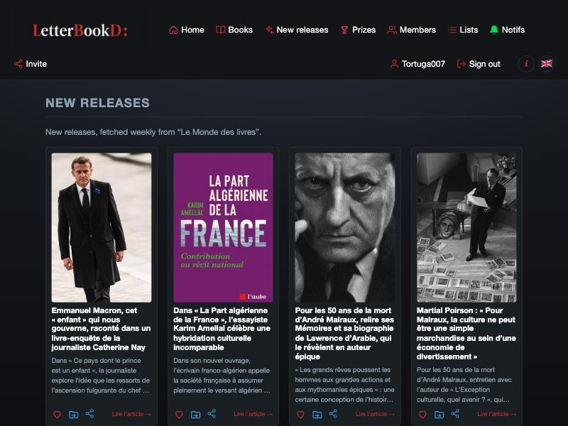

Releases
Why it exists: Follow new literary releases every week. The app automatically pulls Le Monde's book selection to give clubs ideas for their next reads.

Walkthrough
The page is a grid of cards, one per recent release. Each card shows a cover or image, the title, an excerpt, and an action bar at the bottom: favorites, add to a list, suggest, and 'Read the article'.
The fetch runs once a week in the background (Django scheduler).
Action chains
Each row describes a trigger in the UI, the modal or form it opens, and the resulting effect.
| Trigger | Modal / Fields | Effect |
|---|---|---|
| Heart icon | — | Adds or removes the release from your 'Favorites'. If the release is not yet a book in the catalogue, it is added at that point. |
| Folder icon | 'Add to a list' modal. | Places the release in a list (existing or new). |
| Share / triangle icon | 'Suggest this book' modal. | Sends a private suggestion to a member you follow. |
| 'Read the article' link | — | Opens the original Le Monde article in a new tab. |